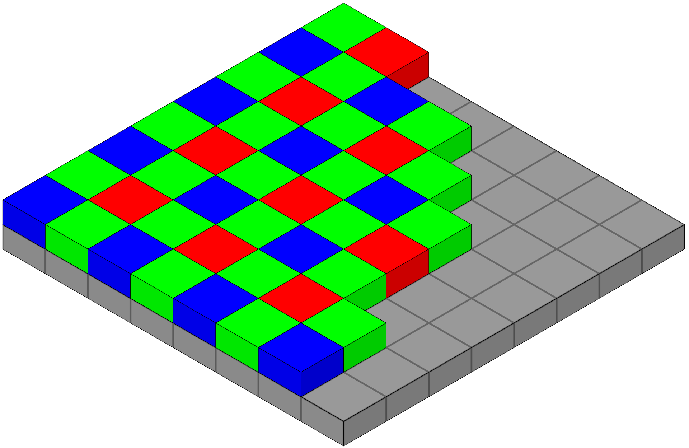
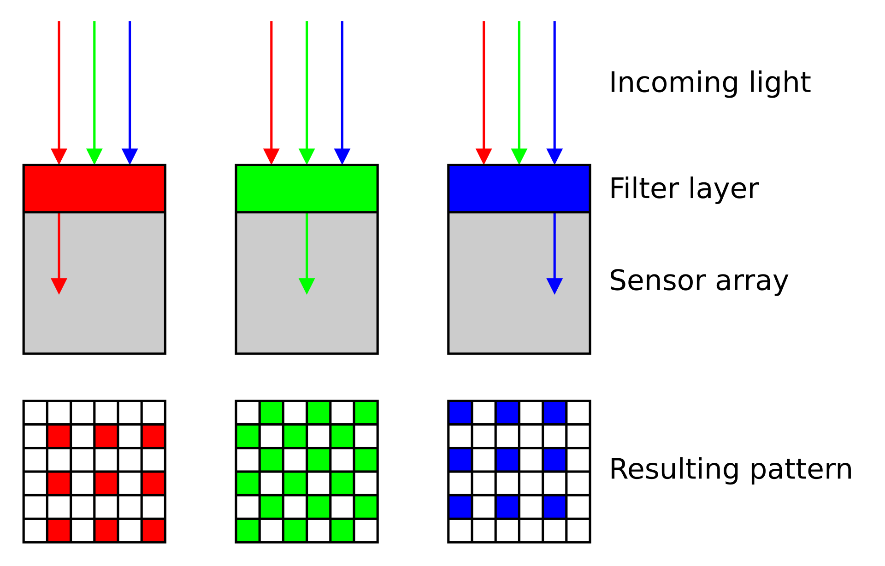
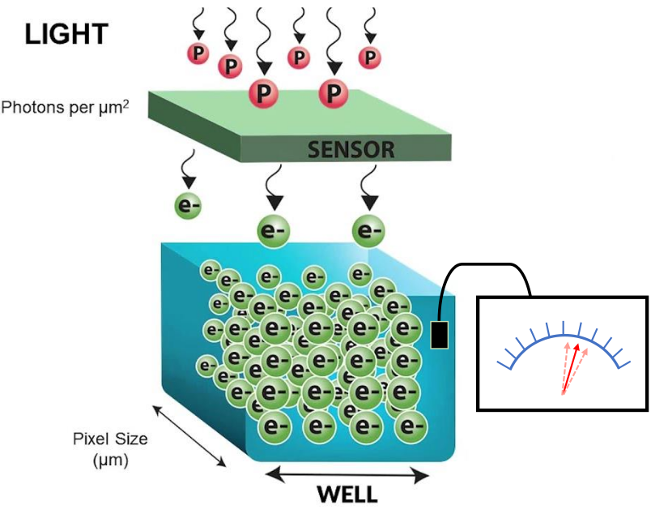

Detectors can be cameras or confocal-style detectors such as:
PMTs (photomultiplier tubes)
GaAsP
APDs (Avalanche Photodiodes)
SilVIR
… will be discussed in session #4 on Confocal Microscopy
Outline
Part 1 - How cameras generate an image.
camera types (CCD, EMCCD, CMOS)
camera noise
Part 2 - What is an image and how to work with it.
bit depth
metadata
histogram
display settings
deconvolution vs AI-denoising
image processing filters
Sensor vs Detector vs Camera
Sensor
The fundamental element that converts a physical stimulus (light, heat, sound) into an electrical signal
the light-sensitive component that converts photons into electrical signals (e.g., CCD, CMOS)
Detector
A broader term that includes sensors and other components to detect signal
Camera is a type of detector which captures light to form images
Camera
A complete imaging device that includes a detector along with optics, housing, and electronics for image capture and processing
Microscopy cameras
Color cameras
used for visual inspection
used for stains and dyes (e.g. histology)
Monochrome cameras
for fluorescence imaging
higher sensitivity than color cameras
used with emission filters to capture specific wavelength ranges
Color camera - Bayer filter array (BFA)
Bayer filter array (BFA) is a color filter pattern to capture color information.
It consists of a grid of red, green, and blue filters arranged in a specific pattern over the camera’s sensor.
Each pixel on the sensor captures light filtered through one of these colored filters
Interpolation of neighboring pixels generates a smooth representation of a colored field of view.
Bayer filter array

Mosaicing

Demosaicing: color interpolation
Color camera - limitations
Each pixel effectively captures only 1/3 of incoming light, leading to reduced sensitivity compared to monochrome cameras
The color information is not directly captured but rather inferred through interpolation, so cannot accurately extract the precise intensity values for further image analysis.
Monochrome camera
Each pixel captures the full intensity of incoming light, resulting in higher sensitivity and better signal-to-noise ratio (SNR) compared to color cameras.
These cameras are used for fluorescence imaging and quantitative analysis, as they provide more accurate intensity measurements without the need for interpolation.
Used in combinations with dichroic mirrors and emission filters to capture specific wavelength ranges, allowing for multi-channel imaging and analysis of different fluorophores.
Used in transmitted-light techniques for better contrast and resolution.
Used in scientific research and applications where accurate intensity measurements are critical, such as in cell biology, neuroscience, and materials science.
Each pixel of the CCD image sensor is composed of a photodiode and a potential well, which can be thought of as a bucket for photoelectrons.
This wavelength dependent conversion of light to photoelectrons is specified as the quantum efficiency (QE).
Photoelectrons accumulate in each bucket until it’s time for readout, when all of the photoelectrons are relayed from one bucket to the next down each row of pixels.
The charge is gathered pixel-by-pixel—serially—into a container at the end of the relay.
Once in the container, the photoelectrons are converted into voltage and processed into an image on the camera circuit board.
Because the photoelectrons are converted into signal (voltage) at a common port, the speed of image acquisition is limited.
EMCCD camera
https://www.teledynevisionsolutions.com
Similar to CCD except that they have an on-chip electron multiplication register that amplifies the signal before readout, allowing for detection of very low light levels.
Because the photoelectrons are converted into signal (voltage) at a common port, the speed of image acquisition is limited.
sCMOS camera
https://camera.hamamatsu.com
In contrast with CCD and EMCCD sensors, each pixel of a CMOS image sensor is composed of a photodiode-amplifier pair.
Unlike a CCD sensor, photoelectrons are converted into voltage by each pixel’s photodiode-amplifier pair.
Because conversion to voltage happens in parallel instead of serially (CCD), image acquisition can be much faster for CMOS sensors.
scientific CMOS sensors combines high QE with fast frame rates and low noise, which translates into high speed, high-resolution biological images, even in low light situations.
For almost all applications, newer sCMOS cameras are a great choice, but for ultra-low light (single fluorescent molecules) EMCCDs may still be better.
Camera noise
Random degradation of any image due to the inherent uncertainty of photon detection.
Mainly three types of noises in microscopy cameras:
Shot noise
Dark noise
Read noise
Shot noise
Uncertainty in the arrival of photons
Arrival of any given photon is independent and cannot be precisely predicted
The probability of its arrival is governed by a Poisson distribution
It is most apparent at low signal levels, where the number of detected photons is small
Shot noise can be reduced by collecting more photons, either with longer exposure times or by combining multiple frames, but this may not always be feasible due to photobleaching or phototoxicity in live samples.

Dark noise
Uncertainty in the photon-to-electron conversion process.
Generated by thermal electrons in the camera sensor even in the absence of light.
Also governed by a Poisson distribution.
Becomes a problem for long exposure such as in bioluminescence imaging.
Temperature-dependent: can be reduced by cooling the camera sensor.
Number of bits (N) determine the range of intensity levels
Image Type
Range of intensity levels (0 to 2N-1)
8-bit
0-255
16-bit
0-4095
32-bit
0-65,535
RGB color (3 x 8 bits)
0-255 per channel
Histogram
8-bit image (256 shades)
Zoomed-in view
Image as a matrix of numbers (0-255)
Segmentation
Identifying object(s) of interest in an image
- cells, nuclei, membrane, transcription sites etc.
Segmentation is usually followed by quantitative analysis of object(s)
- number of cells/nuclei, mean fluorescence intensity, shape etc.
Divide image into areas representing object(s) of interest and background
Segmentation is not an easy task to solve in most practical cases
- Signal variability throughout the image
- Noise, blur and other distortions caused by the imperfect imaging conditions
Segmentation tools
Global thresholding, local thresholding
Image processing filters – Gaussian, Median, Sobel etc.
Human HT29 colon cancer cells, Image from Broad Bioimage Benchmark Collection, Ljosa et al. 2012 Nat Methods
Segmentation using global thresholding
Nuclei stained with Hoechst
Threshold 2
Human HT29 colon cancer cells, Image from Broad Bioimage Benchmark Collection, Ljosa et al. 2012 Nat Methods
Segmentation with local thresholding
Nuclei stained with Hoechst
Auto Local Threshold in Fiji
Human HT29 colon cancer cells, Image from Broad Bioimage Benchmark Collection, Ljosa et al. 2012 Nat Methods
Segmentation using Machine Learning
Supervised learning - pixel classification using Random Forest classifier
Fiji (Weka and Labkit plugins), ilastik, QuPath, Napari, CellProfiler
Requires orders of magnitude less training data/resources than Deep Learning methods
Hoechst-stained Nuclei, image courtesy of Cherie Au, Giannakakou Lab, Weill Cornell Medicine
Hoechst-stained Nuclei, image courtesy of Cherie Au, Giannakakou Lab, Weill Cornell Medicine
Hoechst-stained Nuclei, image courtesy of Cherie Au, Giannakakou Lab, Weill Cornell Medicine
Segmentation using Deep Learning
Most accurate methods available for cells/nuclei segmentation Step 1: Training
Generating a Deep Learning model is resource hungry:
- High-end workstation
- Large amounts of training data (images and annotations)
- Training could take hours to days
- Good programming knowledge required - Python
Step 2: Prediction
Using the model from step 1 to predict the segmentation results :
- A regular laptop is just fine
- Prediction takes seconds to mins
- Little to no programming knowledge required
StarDist (2018)
Cellpose (2021)
Segmentation using Deep Learning
Original
StarDist plugin in Fiji
Cellpose
Hoechst-stained Nuclei, image courtesy of Cherie Au, Giannakakou Lab, Weill Cornell Medicine
Workshop Exercise 1: StarDist based nuclear segmenation in a challenging image in Fiji